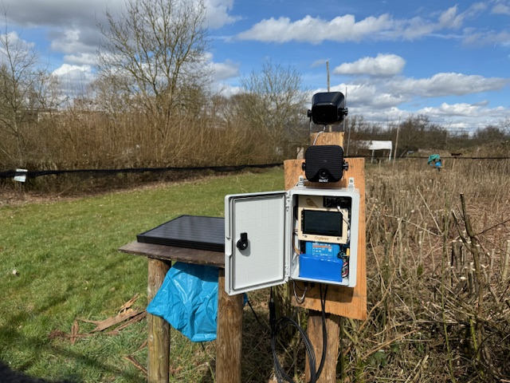

Orpheus wasn't designed in a lab and then offered to researchers. It was the other way around: it exists because bird ringers in Luxembourg described a problem they'd been working around for years.
Ringing stations use acoustic lures — playback of song and calls to bring birds into the nets so they can be ringed, measured, and released for population research. The playback itself is simple. Keeping it running in the field is not. Consumer audio players weren't built for weeks outdoors: batteries drain at the worst moment, timers don't know when the sun rises, and every failure means another trip out to the site — often before dawn.

The brief that came out of those conversations was clear. The ringers needed a playback device that was genuinely autonomous — aware of diurnal cycles, so it plays when the birds are active, not when a timer happens to fire. It had to power itself from the sun, survive the weather, and above all be reliable enough to leave alone for weeks on end, without anyone driving out to change batteries or press play.
Reduce the manual effort. Give researchers a playback device they don't have to think about.
What followed was months of soldering, coding, and wiring. Different amplifier and sensor combinations were tested against each other, and one hardware configuration after another went out into real field conditions to prove itself — or fail. Getting a device to survive unattended in the field isn't one clever idea; it's hundreds of small decisions that only field seasons can validate. A proprietary power management system was designed from the ground up, because keeping a speaker loud, a processor awake, and a battery healthy on nothing but sunlight is the entire problem.
After two full seasons of iteration, Orpheus had evolved into what the ringers originally asked for: a reliable, low-maintenance, robust piece of field equipment — solar-powered, with astronomical scheduling that tracks sunrise and sunset throughout the season, and playback modes designed around how field research actually works. The units serve as acoustic lures at the ringing station in Luxembourg, and the feedback loop with the people who use them hasn't stopped since.
Every Orpheus improvement still starts the same way this whole product did: with a ringer or researcher describing what would make their field season easier.